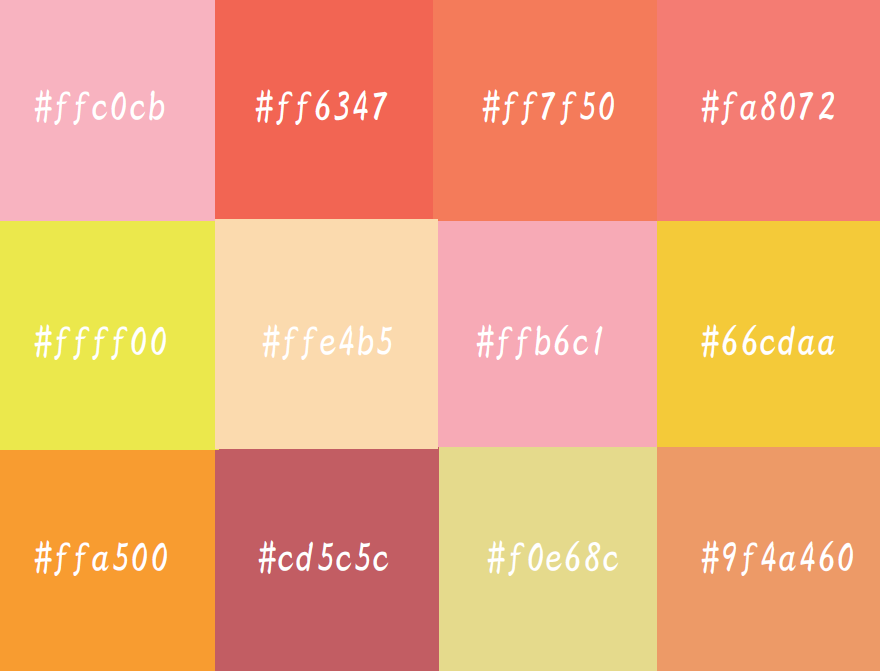

あたたかいイメージ
あたたかい・ほっこり・ぽかぽか

涼しげなイメージ
すずしい・さっぱり・すっきり
パキっとしたイメージ
かっこいい・はっきり・くっきり
メルヘンなイメージ
かわいい・ふわふわ・ほんわか
落ち着いたイメージ
ナチュラル・和風・ゆったり
イメージは決まったけど、何色を使えばいいのか分からない…そんな時にちょっと覗いてみてください。きっと良いアイデアが浮かぶでしょう！
あたたかい・ほっこり・ぽかぽか
すずしい・さっぱり・すっきり
かっこいい・はっきり・くっきり
かわいい・ふわふわ・ほんわか
ナチュラル・和風・ゆったり
光に含まれる波長の長さの違いで、環状に赤、黄、緑、青、紫などの色が配置された色相環で表すことができます。色相は赤からオレンジ、オレンジから黄色、緑、青、紫というように変化するため、円環状に配置して表示することができます。色相環図で中心を通り、反対側に配置されている色を『補色』といいます。『補色』は色相環図の中で最も性質の異なる色相で、この２色の組み合わせはお互いの色を引き立てる性質があります。
赤やオレンジ色を中心とする赤系統の色を『暖色』、青や青紫などの青系統の色を『寒色』と言います。色味の強さ・弱さの度合いを彩度と言います。最も彩度の高い色を純色と言い、逆に最も彩度が低い色を無彩色と言います。純色に白や黒、グレーなどの無彩色を混ぜていくと、色味はだんだんと少なくなり、やがて完全な無彩色となります。一般的に、彩度が高い色は派手に感じ、印象に残りやすく、逆に彩度の低い色は、地味に感じ、印象に残りにくいと言われています。
『色相』と『明度』に関しては見た目で違いがわかりやすいのですが、『彩度』は他の属性と比べて識別することが難しいです。同じ『色相』であれば彩度の違いを見極めることは比較的容易ですが、『色相』が異なる場合には色を扱い慣れている人でも違いが見極めづらいと言われています。色の明るさ、暗さの度合いを明度と言います。色味（色相）と彩度を持たない無彩色はこの明度でのみ色分けすることができます。無彩色である白はすべての色の中でもっとも明度が高く、逆に黒は最も低くなっています。有彩色の中では黄色がもっとも明度が高く、青紫色が最も明度が低くなっています。 明度差は視認性（文字の見えやすさ）と可読性（文字の読みやすさ）に影響を与えます。明度差が大きければ視認性と可読性が向上し、逆に明度差が小さければ視認性と可読性が低下します。
隣り合う色相の明度差が大きい（コントラスト差が大きい）とその差が強調されます。 図のように明度差が大きいと強調され、明度差が小さいと弱く見えます。